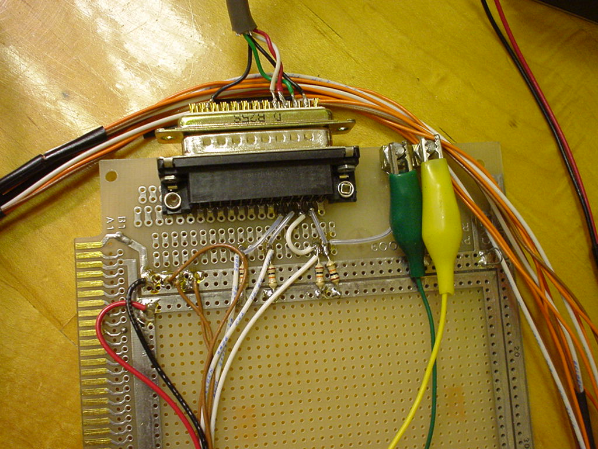

On the top right corner you see two alligator clips that hook to the start sensor. I use a roll of speaker wire from Radio Shack to run from the finish line up to the start gate. I was too lazy to cut the wire and put real connectors on it so I just use a pair of jumpers to connect the end of the spool to the board.
At the top center you can see the DB25 connector that I use to hook the board to my parallel port. I just have a custom cable that hooks only the pins I need (3 lanes, the start sensor and ground).
On the left side (near the card fingers) you can see the red and black wires that connect to the power supply. I had an old power supply laying around so I used that for the prototype. The red wire hooks to the power bus (lower strip) and the black wire hooks to the the ground bus (the upper strip). Just to the right of the black wire's connection point you can see the 3 brown wires that run to the ground side of the phototransistors.
Below the connector you can see the 4 pull-up resisters that drive the 4 signal lines. These resisters are hooked from the power bus across to where the (white) wires come in from the transistors. The last resister, on the right, is for the start gate. Above this junction you can see where the wires hook to the DB25 connector.
The bundle of wires that you see around the outside of the board (under the DB25 and near the alligator clips) are the sensor wires that run to the track. I have about 4 feet of wire between the board and each lane sensor. Each lane sensor actually has three wires hooked to it. When I originally tested the circuit I thought I might need a bias resister on the base side so I hooked a wire to all three legs of the transistor. It turned out that I didn't need the bias so I just cut the wire part way back on the bundle and taped it down. Thus, in the bundle there are three wires to each transistor but there are only two connections on the board. On each lane sensor the white wire is the pull-up, the brown wire is ground and the third (orange) wire is not used. I used a bit of heat shrink tubing ever few inches to keep the bundles for each sensor from separating (you can see a piece of black heat shrink at the left of the picture). You can see what the other end looks like in on the lane sensor page.
My board is clearly much larger than you really need. I think you could actually build all the electronics (pull-up resistors and connectors) to fit inside a DB25 shell. You could plug it into the printer port on the back of the PC and have the sensor connections come straight out of the shell. However, the one I have works for me so I haven't worried about replacing it with a nicer looking setup.

Back to the main Pinewood Timer page